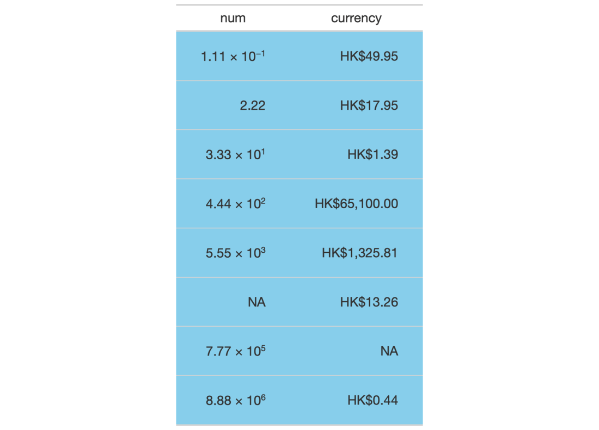

| opt_css {gt} | R Documentation |
The opt_css() function makes it possible to add CSS to a gt table. This
CSS will be added after the compiled CSS that gt generates automatically
when the object is transformed to an HTML output table. You can supply css
as a vector of lines or as a single string.
opt_css(data, css, add = TRUE, allow_duplicates = FALSE)
data |
A table object that is created using the |
css |
The CSS to include as part of the rendered table's |
add |
If |
allow_duplicates |
When this is |
An object of class gt_tbl.

9-8
Other Table Option Functions:
opt_align_table_header(),
opt_all_caps(),
opt_footnote_marks(),
opt_row_striping(),
opt_table_font(),
opt_table_lines(),
opt_table_outline()
# Use `exibble` to create a gt table and
# format the data in both columns; with
# `opt_css()` insert CSS rulesets as
# as string and be sure to set the table
# ID explicitly (here as "one")
tab_1 <-
exibble %>%
dplyr::select(num, currency) %>%
gt(id = "one") %>%
fmt_currency(
columns = currency,
currency = "HKD"
) %>%
fmt_scientific(
columns = num
) %>%
opt_css(
css = "
#one .gt_table {
background-color: skyblue;
}
#one .gt_row {
padding: 20px 30px;
}
#one .gt_col_heading {
text-align: center !important;
}
"
)